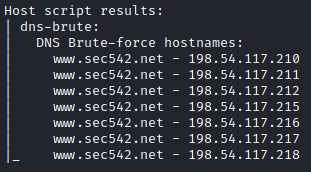

DNS Scans
While WHOIS can be used to identify public netblocks owned by a target organization.
• DNS Reverse Scan:
Once a public netblock is identified, we can use reverse DNS scans to resolve the PTR records for each IP address.
How
1) Perform a WHOIS lookup for IP addresses owned by the target organization
2) perform a reverse DNS lookup for every IP
root@kali:/# dnsrecon.py --domain <domain> --range <netblock>
root@kali:/# nmap -sL <netblock> | grep \) # the grep command searches for a literal ")" character
root@kali:/# msfconsole
msf> use auxiliary/gather/enum_dns
msf> set DOMAIN <domain>
msf> set ENUM_RVL true
msf> set IPRANGE <netblock>
msf> run
msf> use auxiliary/gather/enum_dns
msf> set DOMAIN <domain>
msf> set ENUM_RVL true
msf> set IPRANGE <netblock>
msf> run
• “Brute Force” scans
While each PTR record points to one name (only), multiple CNAMEs (canonical names, aka DNS aliases) can point to one IP address.
With “Brute Force” scan we can discover these multiple CNAMEs
Although commonly called “brute force” scans, these DNS scans are actually dictionary attacks:
1- Supply a dictionary of potential DNS names
2- Read each entry
3- Attempt to resolve $entry.example.com
◇ Nmap
▪ default list is at /usr/share/nmap/nselib/data/vhosts-default.lst with 127 entries

root@kali:/# nmap --script=dns-brute <domain>

▪ custom list
root@kali:/# nmap --script=dns-brute example.net --script-args=dns-brute.hostlist=/usr/share/dnsrecon/namelist.txt
◇ Dnsrecon
dnsrecon has some useful dictionaries, on Kali:
▪ /usr/share/dnsrecon/namelist.txt → 1,907 entries
▪ /usr/share/dnsrecon/subdomains-top1mil-20000.txt → 5,000 entries
▪ /usr/share/dnsrecon/subdomains-top1mil-5000.txt → 20,000 entries
root@kali:/# dnsrecon -t brt -d <domain> --name_server <nameServer> -D /usr/share/dnsrecon/namelist.txt